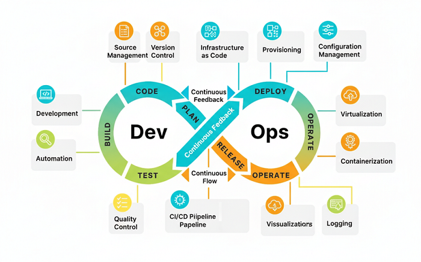

Articles
View the latest news on Stack It Up
Tutorial on using Docker Compose.
read moreA fast, hands-on Kubernetes guide.
read moreFocus on a popular Kubernetes packaging tool.
read moreA quick-start, time-based tutorial.
read more
Focus on container orchestration in GCP.
read morePractical, high-value migration tutorial.
read more